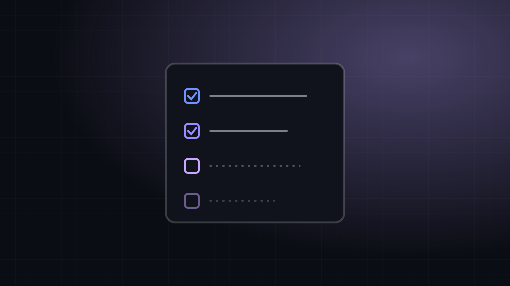

Project Name
One or two sentences about what this project is and why it exists.
Overview
What is it, in plain language?
The problem or idea
Why did you build it? What problem does it solve, or what did you want to learn?
Screenshots and demo

How I built it
Tools, architecture, the main steps. Code snippets are welcome:
$ git clone https://github.com/your-username/your-repoChallenges and lessons learned
- What went wrong and how you fixed it.
- What you would do differently.
What's next
- Done step
- Next step